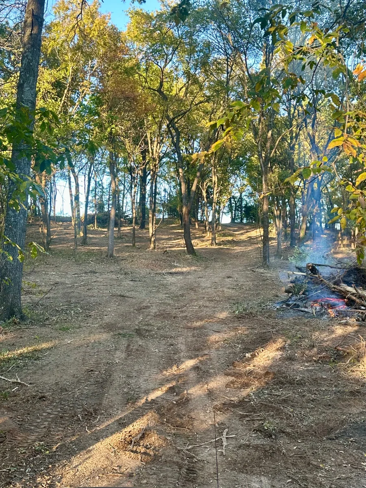
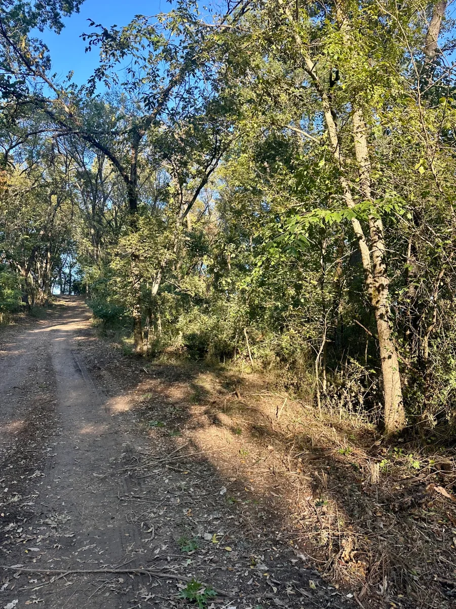

Grand Lake Area • Land Clearing
Selective Land Clearing & View Restoration
PropertyWooded residential acreageServicesSelective clearing, brush removalResultOpen, park-like setting


The Challenge
Dense underbrush, vines and declining timber limited visibility, access and use of the property.
Our Solution
Selective clearing removed unwanted growth and hazardous material while preserving healthy mature trees.
The Result
The property became safer, easier to maintain and more enjoyable, with a clean park-like appearance.